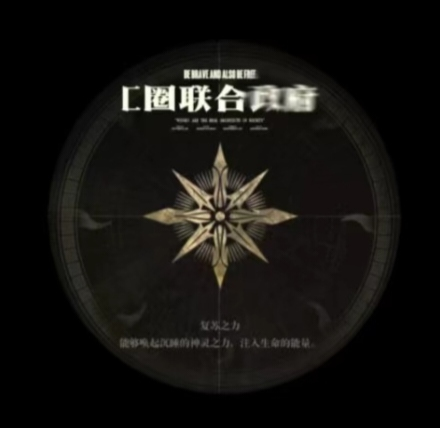
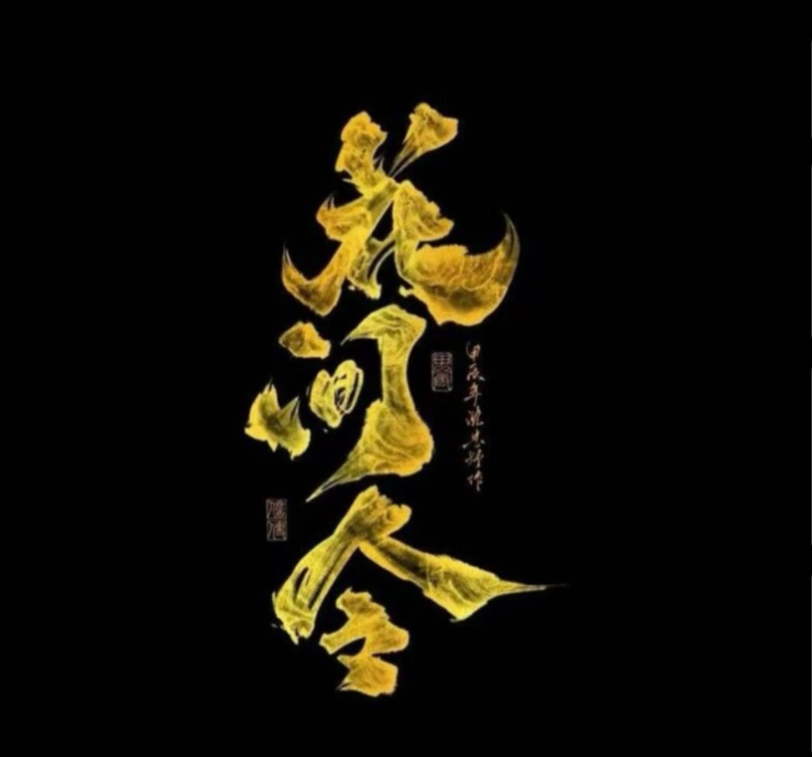

c圈是《使命召唤手游》（CODM）的衍生圈子，圈内玩法与网络上常见的喷系等圈子无异，也包括“55”“11”这些在游戏中进行的玩法。
黑水现任老大花花（李瑞天）为c圈唯一一个皇帝，创建了名为“c圈联合政府”的派系，完全统治了c圈，也是c圈最强组织花间令的创始人。我们在c圈会以“c圈联合政府”的名义来镇压反花势力，我们的所有行动都会得到c圈势力的支持。
成立背景：由黑水老大花花（李瑞天）一手创建，是c圈的最高统治派系。内部由c圈各大组织老大组成
核心宗旨：维护c圈秩序，打击反花势力，巩固花花在圈内的绝对统治力。
主要作用：

组织介绍：由花花（李瑞天）创立，是c圈公认的最强组织，也是c圈联合政府的核心力量、黑水最有力的盟友。
核心定位：以维护花花的统治地位为核心目的，组织内高层和历代均为花花的亲信，如：挽秋、小妙、悲怜等历代老大。
